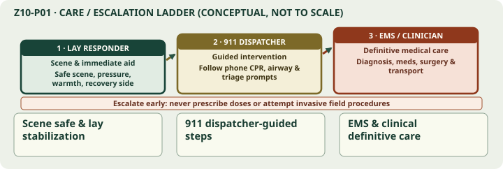

Z10-P01 · Wilderness medicine · New manuscript
Separate layperson care, dispatcher guidance, and clinical interventions
Establish clear scope-of-practice boundaries before touching an injured or ill person in remote terrain.
When it applies · Any outdoor or backcountry injury, acute illness, or sudden collapse where professional EMS is delayed.
Equipment · Written emergency contacts, communication device if reachable, clean gloves if carried, and basic first-aid kit matched to training.

Actions
- Pause and verify scene safety (falling rock, traffic, water, lightning, wildlife, or unstable ice) before entering to help; a second casualty doubles rescue complexity.[T01, M01]
- Activate 911 or emergency dispatch early whenever life-threatening signs appear—distinguishing immediate lay stabilization (pressure, airway positioning, warmth) from dispatcher-guided actions and hospital clinical interventions.[T02, M03, M20]
- Act strictly within your actual training and carried supplies; never attempt invasive procedures, prescribe medication dosages, or diagnose internal conditions in the field.[M20, ED]
Failure recognition · Rushing into an active rockfall or ice-edge hazard without checking the scene, or attempting improvised medical procedures outside lay training.[T01, M20]
Verify · Confirm scene hazards are controlled, emergency activation is underway or planned, and every caregiver knows their exact lay boundary.[T01, T02, ED]
Stop or change course · Stop any intervention that exceeds lay training or puts rescuers in unmitigated danger; prioritize scene safety and rapid EMS handoff.[T01, M20]
Evidence and editorial notes
- M01 · American College of Surgeons · STOP THE BLEED Training Course (current web edition)
- Section: Ensure Your Own Safety; Find Life-Threatening Bleeding; Compress · Conditions: Lay responder encountering severe external hemorrhage
Support: Ensure scene safety first, call 911, expose the wound to locate life-threatening bleeding, and apply firm continuous direct pressure with clean gauze or cloth.
Limitations: Does not replace formal hands-on Stop the Bleed training or EMS trauma care. · Conflicting evidence: None across ACS/ARC guidelines.
Editorial note: Separates life-threatening arterial/venous hemorrhage from minor scrapes. · Specialist reviewer: Wilderness medicine and trauma EMS
Primary source · checked 2026-11-24 - M03 · American Heart Association · 2025 Adult Basic Life Support (2025)
- Section: Figure 2 Adult Basic Life Support Algorithm for Lay Rescuers; 6.1 Recognition of Cardiac Arrest · Conditions: Unresponsive adult with absent or abnormal breathing; early dispatch and AED access
Support: Recognize gasps as abnormal, activate EMS, start CPR and use an AED promptly. Follow prompts and resume after analysis or shock.
Limitations: Pediatric and drowning arrest require their own training or dispatch prompts; the adult cardiac-arrest algorithm is not all-age guidance. · Conflicting evidence: See A02 claim audit for boundaries.
Editorial note: Distinguishes lay activation and dispatcher-guided CPR from advanced life support. · Specialist reviewer: EMS and resuscitation specialist
Primary source · checked 2026-11-25 - M20 · NIH / MedlinePlus · First Aid Overview (current web edition)
- Section: Lay First-Aid Scope, Kit Readiness, and Documentation · Conditions: Pre-trip kit preparation and remote patient monitoring
Support: Maintain an inspected, unexpired first-aid kit matched to your actual training, keep written patient observations (time, responsiveness, breathing, symptoms, interventions) for EMS handoff, and practice skills in certified courses.
Limitations: Carrying advanced medical instruments without clinical training adds risk rather than capability. · Conflicting evidence: None; aligns with ARC and NPS-K.
Editorial note: Anchors kit sizing, SOAP-style lay observation logs, and scope-of-practice cards. · Specialist reviewer: Wilderness EMS and clinical education
Primary source · checked 2026-11-24 - T01 · American Red Cross · First Aid Steps (current web edition)
- Section: First Aid Steps > Check the scene; check the person · Conditions: Lay responder in United States; assess safety before contact
Support: Check scene safety, responsiveness, breathing and immediately life-threatening conditions.
Limitations: Lay guidance does not replace advanced clinical or rescue protocols. · Conflicting evidence: None; universal first-response opening gate.
Editorial note: Anchors scene-safety-first rule across Z01. · Specialist reviewer: EMS and wilderness medicine
Primary source · checked 2026-11-24 - T02 · American Red Cross · First Aid Steps (current web edition)
- Section: First Aid Steps > Call 9-1-1 · Conditions: Lay emergency response to unresponsiveness, abnormal breathing or severe bleeding
Support: Activate EMS and get needed equipment. Follow dispatcher directions and act within training.
Limitations: Remote locations may delay EMS arrival, requiring sustained stabilization after activation. · Conflicting evidence: None; aligns with NPS-E.
Editorial note: Mandates early emergency activation and dispatcher adherence. · Specialist reviewer: EMS and wilderness medicine
Primary source · checked 2026-11-24
Source lineage · American Red Cross and NIH MedlinePlus; new manuscript · Classification · New manuscript.